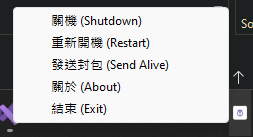
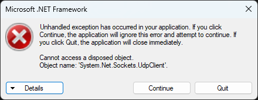

前言
原本只是要弄一個方便讓我在外地可以開關機的小工具，結果弄著弄著變成一個可以跟NodeRED配合，監督伺服器開關機狀態的程式了www
架構圖

這個程式用到了下面幾個技術的應用：
- NodeRED
- UDP (Wake On Lan)
- Google Home
程式介紹（前端）
程式執行的時候會直接常駐在工作列的通知欄內，不會有任何視窗出現。
按下右鍵可以叫出選單，選擇要做系統/伺服器的操作。
 按下關機/重新開機，程式會透過下面程式碼讓系統進行關機/重新開機…等操作。
1 | Process.Start("ShutDown", "/s"); // to shutdown |
程式介紹（後端）
背後的伺服器流程使用NodeRED架設。（使用NodeRED的原因是方便且快速）
- 區塊使用到UDP、WoL與 Google Home (Smart Nora) 函式庫。
- 送出開機的指令會透過 WoL 協定 (UDP Port 9)。
- 送出關機/重新開機的指令會透過 UDP 協定 (Port 2401)送出。
- 程式會透過 UDP 協定 (Port 2400)傳回伺服器的資訊。
程式介紹（儀錶板）

- 使用 NodeRED Dashboard 函式庫。
- 將伺服器傳回的資訊（IP、伺服器狀態）顯示在儀錶板。
- 透過按鈕控制 NodeRED 送出 UDP/WoL 封包給對應的伺服器。
遇到的問題
- 按下關機/重新開機的時候會跳出UdpClient的錯誤。
 - 安裝到 Windows 伺服器上後，無法正常接收來自 NodeRED 的 UDP 封包（本機測試是沒問題的）。
- 無法完整確認伺服器運作狀態（至少要每 10s/1min 傳回一次Alive封包，確認伺服器狀態）。
後記
由於我未來的上班地點，需要找租屋處，之後也不太常回家了。
當初要撰寫這支程式之前，原本只是想說不花個400去買遠端開機卡，改來研究一下Wake On Lan怎麼運作。
由於我的主機板是MSI，在BIOS內找尋遠端開機的選項也是花了一番功夫，看了Youtube影片後才找到要開啟的選項。（MSI你真的好棒棒）
後來寫著寫著，乾脆來搞一個可以開關機的小程式，剛好之前也有用 Docker 架一個 NodeRED 的容器，不如把它們兩個參在一起吧！XDD
於是就有了這篇Blog的誕生。
Comments